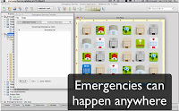

Emergency Service Drools Application
Hi there, the following video shows the Emergency Service Drools Application. This application show Drools and jBPM5 in action. We will be updating this application to show an end to end application using all the platform features. 
(github repo renamed -> https://github.com/Salaboy/emergency-service-drools-app)
You can get the source code cloning the github repo:
https://github.com/Salaboy/emergency-service-drools-app
Read more about it in:
- You can take a look at the JavaOne Brazil presentation that explains the concepts around the demo in the following post: http://salaboy.wordpress.com/2010/12/23/javaone-2010-brazil-speaker-notes-slides/
- You can take a look at the Business Process, Business Rules and Events definitions of this application in the following post: http://salaboy.wordpress.com/2010/12/23/drools-at-javaone-brazil-2010/
Please give us feedback and feel free to join us adding new features, forking the app or asking for new features!
Original Post: http://wp.me/pbXhi-ov